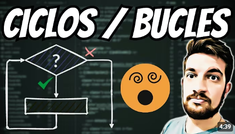

Bienvenido a esta página web para conoce lo basico y esencial para iniciar en el mundo del desarrollo web

El codigo HTML (Lenguaje de marcado de Hipertexto) tiene por finalidad el poder estructurar la pagina web y desplegar su contenido, para ello este se compone de etiquetas que conforman elementos, de los cuales los más comunes son:
Para obtener más información haz clic AQUÍ
Están compuestas por un número definido de acciones que se ubican en un orden específico y se suceden una tras otra
Permiten que un algoritmo sea flexible al tomar decisiones basadas en condiciones que siempre son VERDADERO o FALSO. Según el resultado, el algoritmo elige qué acciones ejecutar y cuáles ignorar, dividiéndose en tres tipos:

Permiten ejecutar un conjunto de instrucciones de forma automática un número finito de veces.